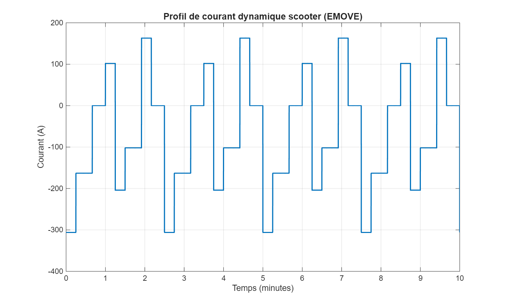
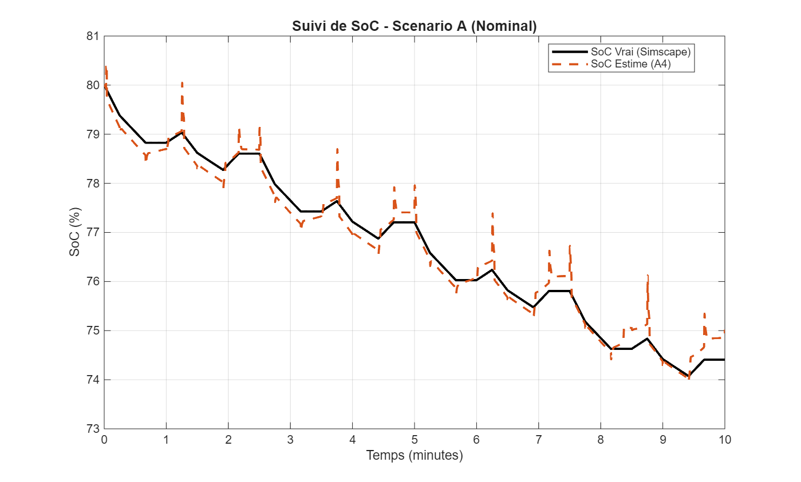
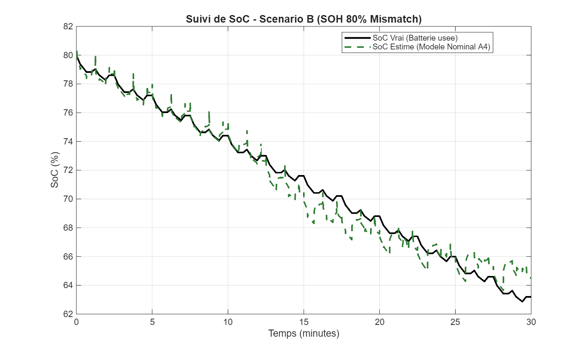
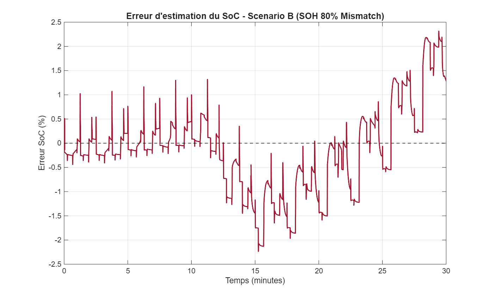
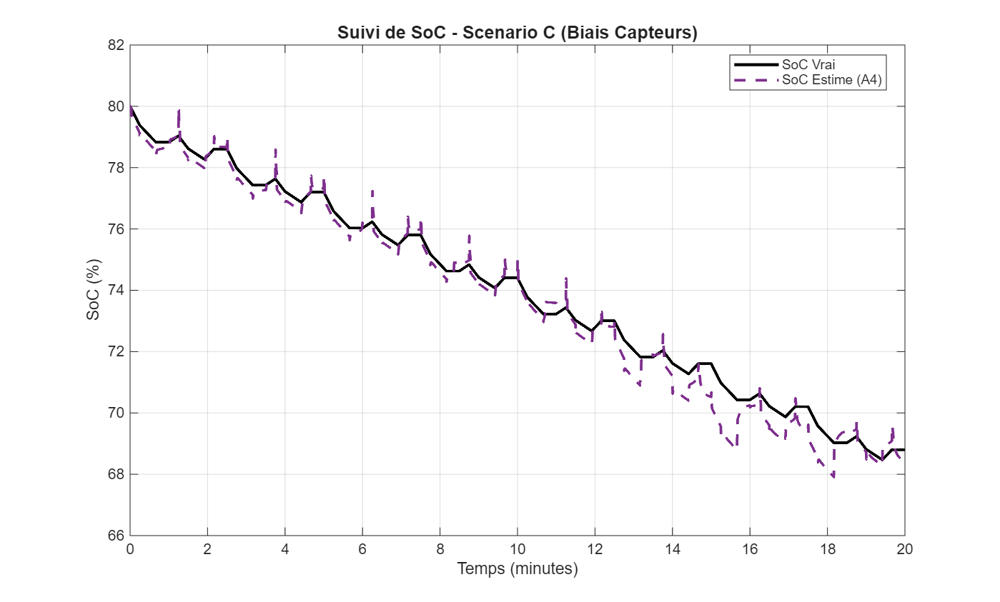
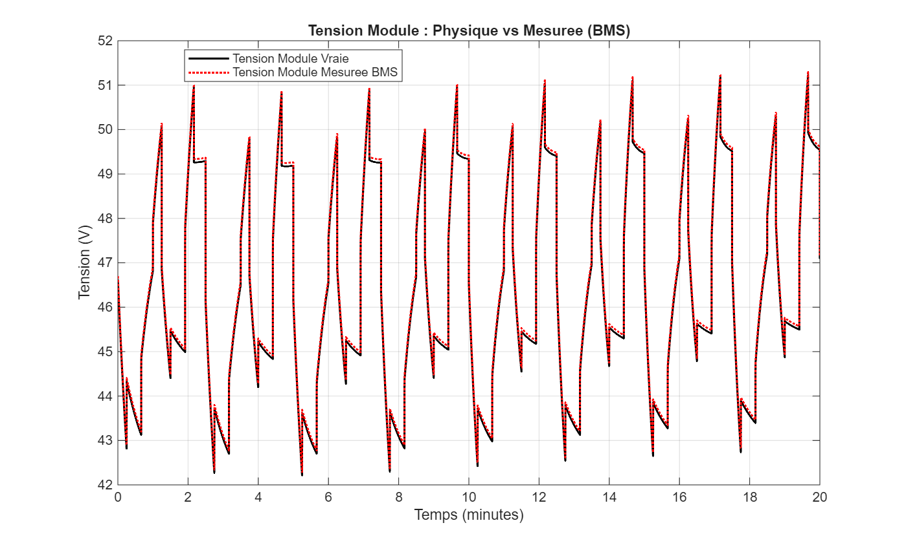
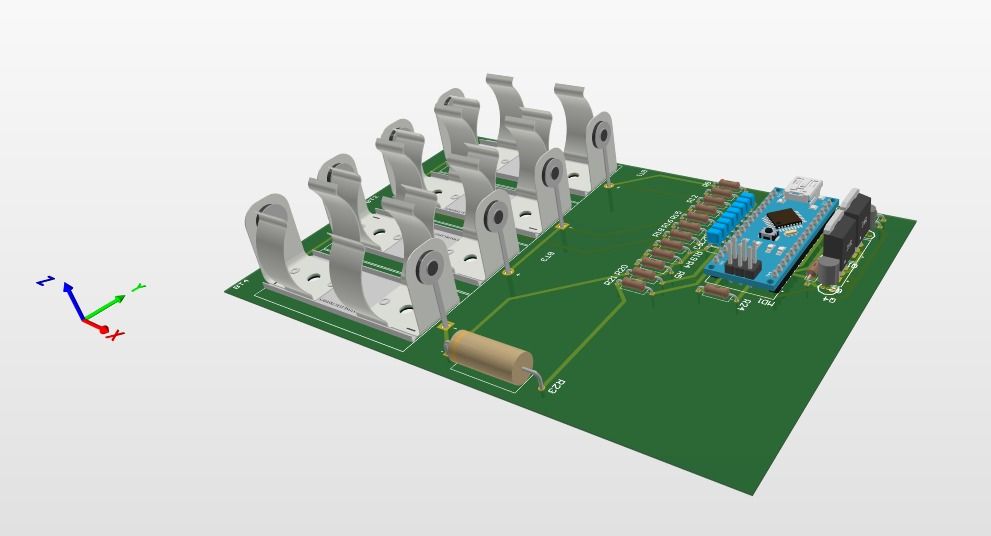

Smart BMS: AdvancedSOC Estimation &Active Balancing
Emove Véhicules · Battery intelligence, embedded hardware, and active energy redistribution
A focused case study on the algorithmic and hardware engineering of a Smart Battery Management System. The work centers on robust State-of-Charge estimation under dynamic scooter loads and an active balancing architecture based on bidirectional synchronous flyback energy transfer.
Problem Statement
Field observations of the electric scooter fleet revealed critical performance anomalies, specifically:
Premature Power Cut-offs
The vehicle would experience abrupt power loss, despite the dashboard State-of-Charge (SOC) indicator displaying approximately 20% remaining capacity.
Severe SOC Instability
Probable Causes
A root-cause analysis identified three primary factors contributing to these failures:

1. Cell Heterogeneity
Inherent variations in cell capacity and internal resistance, resulting in the weakest series element prematurely constraining the entire battery pack.
2. Insufficient Balancing Capability
3. Non-Robust SOC Estimation
The baseline estimation algorithm failing to dynamically and accurately track the true State-of-Charge under transient load conditions.
Project Scope
The ensuing engineering work focuses specifically on mitigating Cause #3 (Non-Robust SOC Estimation), while simultaneously integrating a high-performance active balancing architecture to address cell heterogeneity.
Engineering Workflow
Modeling & Algorithm Development
The engineering cycle initiated with the development of a high-fidelity virtual battery model (Digital Twin). This facilitated the rigorous design, tuning, and closed-loop testing of the SOC estimation algorithms within the MATLAB/Simulink environment, effectively abstracting hardware constraints during the early development phases.

Validation by Simulation
To guarantee algorithmic robustness under diverse and highly dynamic load profiles, a comprehensive suite of 12 rigorous test scenarios was executed via Model-in-the-Loop (MiL) simulation. Three critical scenarios are detailed below:
Scenario A: Nominal Dynamic Profile
This scenario evaluates the estimator's response under a nominal yet highly dynamic current profile. The results confirm exceptional estimation stability under heavy dynamic loads, achieving a Root Mean Square Error (RMSE) of just 0.23% and a final estimation error of 0.61%.


Scenario B: Battery Aging (80% SOH)
This scenario assesses algorithmic robustness against battery degradation, specifically simulating a State-of-Health (SOH) of 80%. The estimated SOC accurately tracks the true SOC despite the reduced available capacity. Demonstrating an RMSE of 0.89% and a final error of 1.33%, this scenario validates the architecture's capability to maintain a highly reliable estimation in the presence of moderate capacity fade.


Scenario C: Sensor Bias and Measurement Noise
To evaluate sensitivity to measurement inaccuracies, realistic sensor biases were introduced to the voltage and current readings. Despite these perturbations, the UKF-LSTM fusion, governed by the supervisory logic, successfully mitigated the impact of sensor uncertainty. The system maintained tight tracking with an RMSE of 0.49% and a final error of only 0.25%.


Hardware Prototyping (Hardware-in-the-Loop)
Upon achieving successful simulation metrics, the algorithmic pipeline was ported to a simplified Hardware-in-the-Loop (HiL) prototype for empirical validation. This setup featured a custom Analog Front-End (AFE) for precise acquisition of cell voltages (via precision resistive dividers), pack current (via a 0.22Ω shunt), and temperatures (via NTC thermistors).
Crucially, this phase successfully validated the power protection architecture: a high-side double-switch topology utilizing P-Channel MOSFETs (IRF5210), safely driven by an NPN transistor (2N3904) level-shifting stage to interface with the microcontroller logic.

Industrial Hardware Architecture
The validated prototype was subsequently transitioned into a comprehensive 6-layer industrial PCB layout using Altium Designer. The architecture centers around a high-performance STM32H743VIT6 microcontroller, leveraging its FPU, DMA, and dual clocks (32.768 kHz / 25 MHz) to guarantee real-time execution of the ECM, UKF, and LSTM networks.
The board integrates a BQ76952PFBR Analog Front-End for primary autonomous hardware protection, and an LTC3300-1 active balancing controller to enable bidirectional energy transfer. Strict EMC and signal integrity constraints were applied, including galvanic isolation (TME 0505S) and a dedicated CAN bus interface for vehicle integration.


Conclusion & Future Work
The proposed intelligent BMS architecture successfully mitigates premature power cut-offs and maximizes the extraction of usable energy. Future engineering directives involve comprehensive real-time validation on full-scale LFP packs under actual vehicle operating conditions to certify the system for mass production.
Interested in this project?
Explore my CV, connect on LinkedIn, or contact me to discuss battery modeling, embedded systems, and electric mobility engineering.